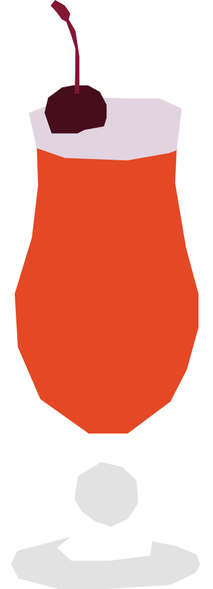

¿Sabes contar hasta cuatro?
Su nombre significa "medicina" en swahili, en broma por su supuesto poder curativo para las resacas. Se popularizó en el famoso restaurante Carnivore de Nairobi, donde se prepara tradicionalmente machacando la lima y la miel con un mazo de madera especial.
RECETA
- 60 ml ron jamaicano
- 30 ml jugo de lima
- 30 ml jugo de naranja
- 30 ml jugo de piña
- 15 ml granadina
- Hielo
- Cereza para decorar
- Agrega todos los ingredientes a una coctelera con hielo.
- Agita bien y sirve en un vaso con hielo.
- Decorar con una cereza
Vaso: Vaso alto (highball)